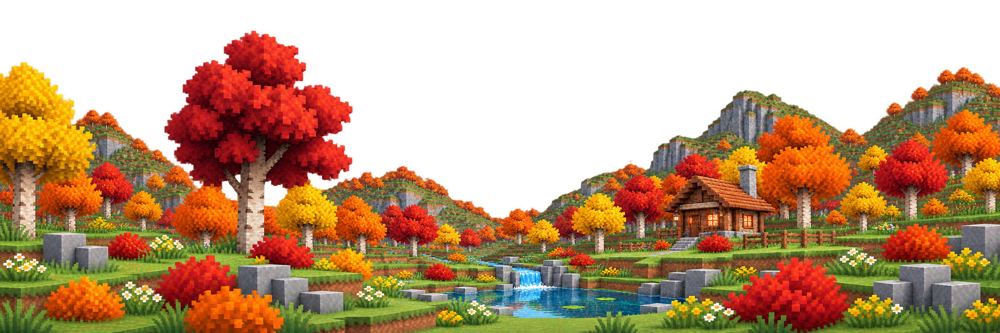
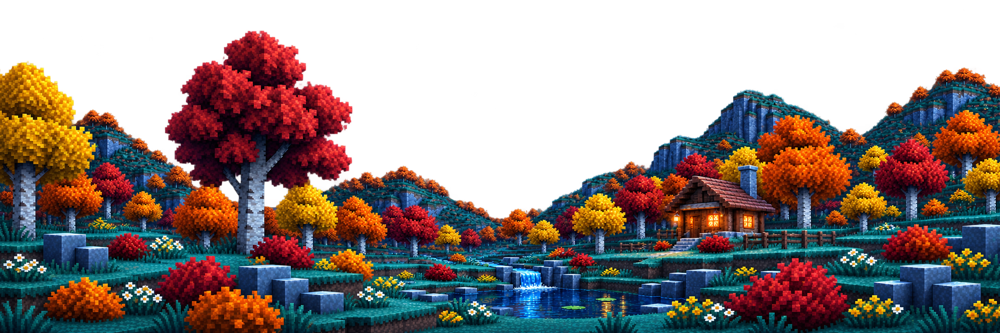
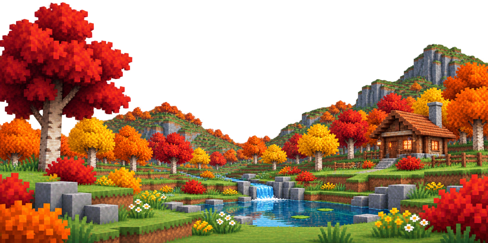
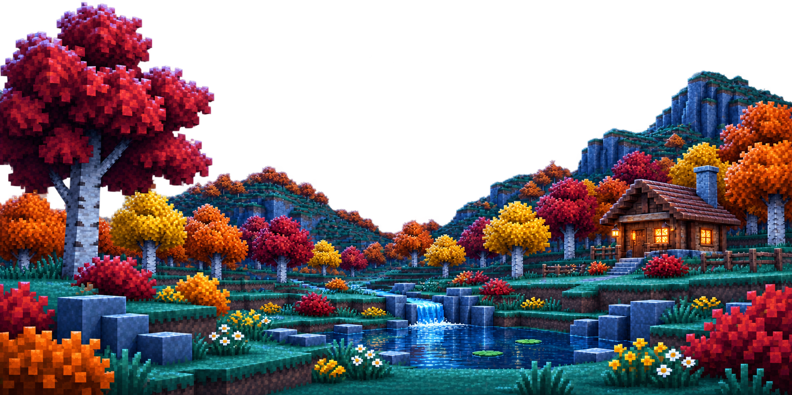
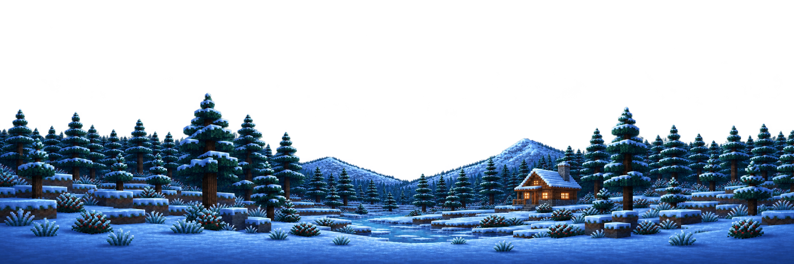
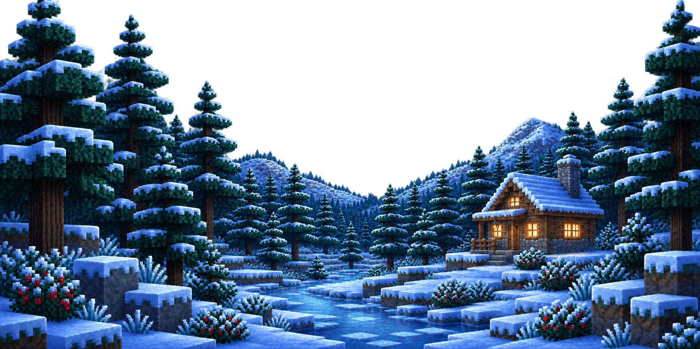

Living Overworld — seasonal redraw prototype
Review onlyNot integratedFresh matched autumn day/night masters and authored blue winter-night treatments. Sky, celestial objects, stars, clouds, and weather remain independent.
Autumn desktop — matched day and night


Autumn 390px mobile


The mobile masters are independently composed, not desktop crops. The cabin, valley, water, foreground, and open celestial corridor remain cohesive with desktop.
Day and night use matching geometry within each viewport, preventing doubled landmarks during a short crossfade.
Winter desktop — authored blue night

Winter 390px mobile

The accepted winter geography is preserved. Only the authored night lighting changes: cobalt/navy snow shadows, icy highlights, green-blue evergreens, and warm windows.
Standalone skyline inspection
The autumn night mobile master is shown over six backgrounds. No runtime blur, mask, fog, or edge overlay is applied.